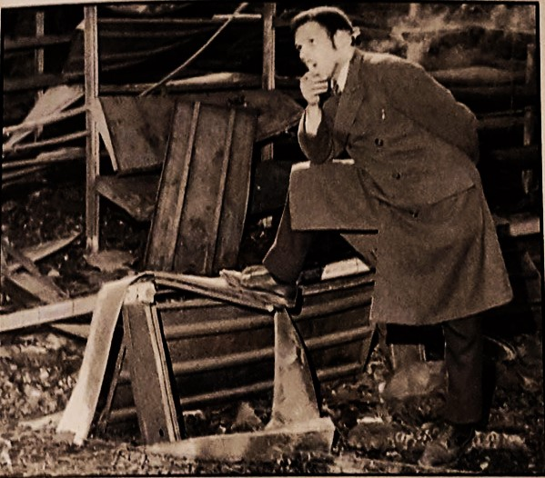

Mainway SupermarketOpened in 1954 and operated by a family of 4 brothers, the Mainway wasn’t just any old grocery store. It fostered a warm atmosphere for shoppers and workers, and everyone got along regardless of the big bogeyman in the room at the time…race
RiotsBurned down in 1968 during the Hill District riots by an angry black populace pushed to the edge by the expansion of the Civic Arena, and the promise to provide more affordable housing for the predominantly black families displaced by the project being broken. The final straw was the assassination of Martin Luther King Jr on April 4 of 1968. The Mainway was torched in the heat of the anger, leaving a scar in the community – and a gaping hole which wasn’t filled for a long time. |

Food Desert
Ever since the burning of the Mainway, the Hill was a food desert for 30 years.
In 2013, a Shop ‘n Save opened, a brief respite, but it closed down in 2019 due to financial loss and maintenance issues
"We finally get a Supermarket in the Hill District."- Harmond Wilks to Old Joe in Radio Golf. They talk about bringing a supermarket into the Hill District, an example of a positive of urban renewal. August Wilson used this play as a vehicle to examine multiple perspectives on urban renewal, coming to the conclusion that urban renewal would only be good if it preserved the culture of the place. |
Salem’sTo solve this problem, enterprising businessman Abdullah Salem opened another branch of his popular Salem’s Supermarket grocery outlet (the first one is located in Shadyside). He and his family have ties to the Hill District. It also features a café. The store opened on February 8th. All of the 65 employees at this branch are from the Hill District.
|

|